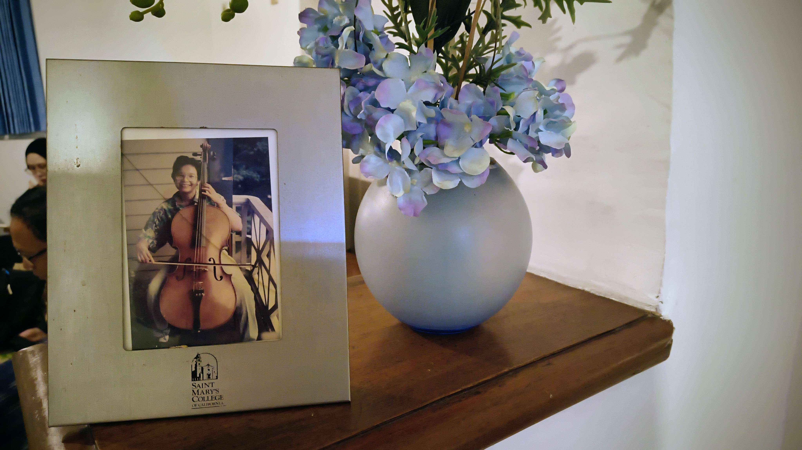

The Laboratory of Ecology and Conservation is saddened to report the passing of Prof. Tjut Sugandawaty Djohan, our former head and long-time colleague at the lab. She was 73. As we collectively mourn her, we also remember her career and the impact she had on the people around her.
A graduate of the Faculty of Biology, Universitas Gadjah Mada, she completed her PhD at the University of California, Davis, in 1994, with her dissertation titled, Nutrient Dynamics in a Subalpine Wetland of California. She taught at the Faculty of Biology for over four decades, focusing on the ecology of wetlands and aquatic landscapes, as well as conservation biology.
Prof. Tjut published extensively on wetland ecology, most notably on the potential of wetlands to mitigate urban runoff in colder climates. She also may be remembered for her work on coastal erosion and the rehabilitation of mangroves in Kalimantan. Separately, Prof. Tjut also studied the importance of rainwater as drinking water by tropical communities, along with the public health risks therein, especially in areas where pollution is an impediment to safe consumption, consequently writing about accessible treatment of rainwater to reduce the associated health impacts.
Prof. Tjut will be remembered by her former students and colleagues alike for her stern demeanour, most characterised by the manner in which she would patrol the hallways outside her office, ensuring students were on their best behaviour. As a teacher, she was well-known for her traditionalist approach, preferring old-school methods of ecological research. In her later years, she softened considerably, and would often converse with students in the lab, regaling them with tales of her expeditions across the western United States and the Indonesian archipelago. We will fondly remember her passion for ecology, and her dedication to the preservation of aquatic ecosystems that spanned nearly fifty years.
Upon her retirement, we gathered to remember her time at the lab, and we believe this video is still a fitting tribute to her. Rest in peace, Prof. Tjut.